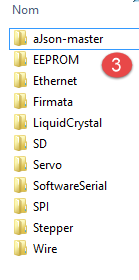
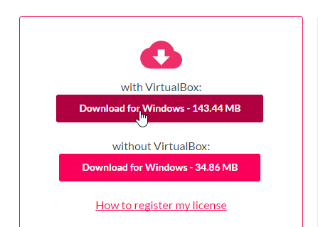
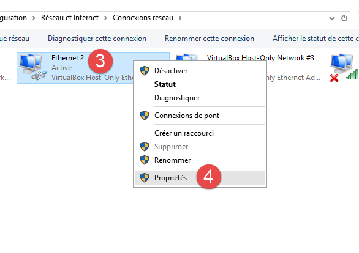
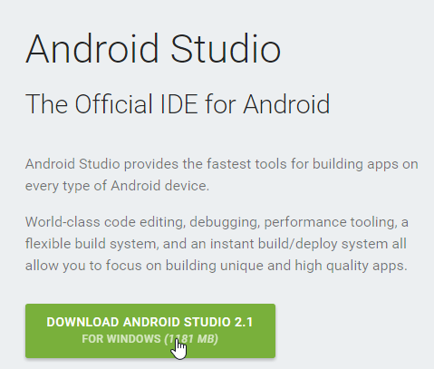
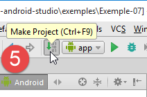
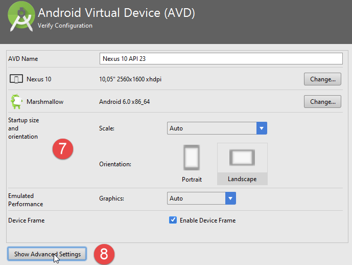
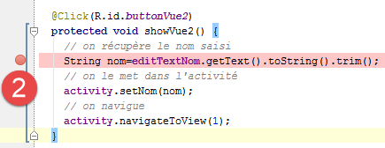
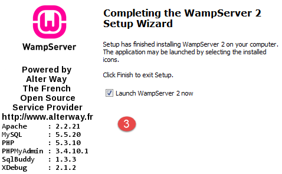

6. الملاحق
نشرح هنا كيفية تثبيت الأدوات المستخدمة في هذا المستند على أجهزة تعمل بنظام التشغيل Windows 7 إلى 10. يجب على القارئ تكييف هذه التعليمات مع بيئته الخاصة.
6.1. تثبيت Arduino IDE
الموقع الرسمي لـ Arduino هو [http://www.arduino.cc/]. هنا ستجد بيئة تطوير Arduino [http://arduino.cc/en/Main/Software]:
 |  |
الملف الذي تم تنزيله [1] هو ملف ZIP، وبمجرد استخراجه، يتم إنشاء بنية الدليل [2]. يمكنك تشغيل بيئة التطوير (IDE) بالنقر المزدوج على الملف القابل للتنفيذ [3].
6.2. تثبيت برنامج تشغيل Arduino
لكي يتواصل IDE مع Arduino، يجب أن يتعرف الكمبيوتر المضيف على Arduino. للقيام بذلك، اتبع الخطوات التالية:
- قم بتوصيل Arduino بمنفذ USB على الكمبيوتر المضيف؛
- سيحاول النظام بعد ذلك العثور على برنامج تشغيل الجهاز USB الجديد. ولن يتمكن من العثور عليه. يجب عليك بعد ذلك تحديد أن برنامج التشغيل موجود على القرص في <arduino>/drivers، حيث <arduino> هو مجلد تثبيت Arduino IDE.
6.3. اختبار IDE
لاختبار IDE، اتبع الخطوات التالية:
- قم بتشغيل IDE؛
- قم بتوصيل Arduino بالكمبيوتر الشخصي عبر كابل USB الخاص به. في الوقت الحالي، لا تقم بتوصيل بطاقة الشبكة؛
 |  |
- في [1]، حدد نوع لوحة Arduino المتصلة بمنفذ USB؛
- في [2]، حدد منفذ USB الذي تم توصيل Arduino به. لمعرفة ذلك، افصل Arduino ولاحظ المنافذ. أعد توصيله وتحقق من المنافذ مرة أخرى: المنفذ الذي تمت إضافته هو منفذ Arduino؛
قم بتشغيل بعض الأمثلة المضمنة في IDE:
 |
يتم تحميل المثال وعرضه:
 |
الأمثلة المضمنة في بيئة التطوير المتكاملة (IDE) تعليمية للغاية ومزودة بتعليقات مفيدة. كُتب كود Arduino بلغة C ويتكون من جزأين متميزين:
- وظيفة [setup] التي تعمل مرة واحدة عند بدء تشغيل التطبيق، إما عند "تحميله" من الكمبيوتر المضيف إلى Arduino، أو عندما يكون التطبيق موجودًا بالفعل على Arduino ويتم الضغط على زر [Reset]. هذا هو المكان الذي تضع فيه كود تهيئة التطبيق؛
- وظيفة [loop] التي تعمل بشكل مستمر (حلقة لا نهائية). هذا هو المكان الذي يوضع فيه جوهر التطبيق.
هنا،
- تقوم وظيفة [setup] بتكوين الدبوس 13 كإخراج؛
- تقوم وظيفة [loop] بتشغيله وإيقافه بشكل متكرر: يتم تشغيل وإيقاف LED كل ثانية.
 |
يتم تحميل البرنامج المعروض إلى Arduino باستخدام الزر [1]. وبمجرد تحميله، يتم تشغيله ويبدأ LED 13 في الوميض بشكل مستمر.
6.4. اتصال شبكة Arduino
يجب أن يكون جهاز (أجهزة) Arduino والكمبيوتر المضيف على نفس الشبكة الخاصة:
 |
إذا كان هناك جهاز Arduino واحد فقط، فيمكن توصيله بالكمبيوتر المضيف باستخدام كابل RJ-45 بسيط. أما إذا كان هناك أكثر من جهاز واحد، فسيتم توصيل الكمبيوتر المضيف وأجهزة Arduino بنفس الشبكة عبر موزع صغير.
سيتم وضع الكمبيوتر المضيف وأجهزة Arduino على الشبكة الخاصة 192.168.2.x.
- يتم تعيين عناوين IP لأجهزة Arduino بواسطة شفرة المصدر. سنرى كيف؛
- يمكن تعيين عنوان IP للكمبيوتر المضيف على النحو التالي:
- انتقل إلى [لوحة التحكم\الشبكة والإنترنت\مركز الشبكة والمشاركة]:
 |
- في [1]، اتبع الرابط [اتصال الشبكة المحلية]
 |  |
- في [2]، اعرض خصائص الاتصال؛
- في [4]، اعرض خصائص IPv4 [3] للاتصال؛
 |
- في [5]، قم بتعيين عنوان IP [192.168.2.1] للكمبيوتر المضيف؛
- في [6]، قم بتعيين قناع الشبكة الفرعية [255.255.255.0] للشبكة؛
- تأكد من كل شيء في [7].
6.5. اختبار تطبيق شبكة
باستخدام IDE، قم بتحميل المثال [Examples / Ethernet / WebServer]:
/*
Web Server
A simple web server that shows the value of the analog input pins.
using an Arduino Wiznet Ethernet shield.
Circuit:
* Ethernet shield attached to pins 10, 11, 12, 13
* Analog inputs attached to pins A0 through A5 (optional)
created 18 Dec 2009
by David A. Mellis
modified 9 Apr 2012
by Tom Igoe
*/
#include <SPI.h>
#include <Ethernet.h>
// Enter a MAC address and IP address for your controller below.
// The IP address will be dependent on your local network:
byte mac[] = {
0xDE, 0xAD, 0xBE, 0xEF, 0xFE, 0xED };
IPAddress ip(192,168,1, 177);
// Initialize the Ethernet server library
// with the IP address and port you want to use
// (port 80 is default for HTTP):
EthernetServer server(80);
void setup() {
// Open serial communications and wait for port to open:
Serial.begin(9600);
while (!Serial) {
; // wait for serial port to connect. Needed for Leonardo only
}
// start the Ethernet connection and the server:
Ethernet.begin(mac, ip);
server.begin();
Serial.print("server is at ");
Serial.println(Ethernet.localIP());
}
void loop() {
// listen for incoming clients
EthernetClient client = server.available();
if (client) {
Serial.println("new client");
// an http request ends with a blank line
boolean currentLineIsBlank = true;
while (client.connected()) {
if (client.available()) {
char c = client.read();
Serial.write(c);
// if you've gotten to the end of the line (received a newline
// character) and the line is blank, the http request has ended,
// so you can send a reply
if (c == '\n' && currentLineIsBlank) {
// send a standard http response header
client.println("HTTP/1.1 200 OK");
client.println("Content-Type: text/html");
client.println("Connection: close");
client.println();
client.println("<!DOCTYPE HTML>");
client.println("<html>");
// add a meta refresh tag, so the browser pulls again every 5 seconds:
client.println("<meta http-equiv=\"refresh\" content=\"5\">");
// output the value of each analog input pin
for (int analogChannel = 0; analogChannel < 6; analogChannel++) {
int sensorReading = analogRead(analogChannel);
client.print("analog input ");
client.print(analogChannel);
client.print(" is ");
client.print(sensorReading);
client.println("<br />");
}
client.println("</html>");
break;
}
if (c == '\n') {
// you're starting a new line
currentLineIsBlank = true;
}
else if (c != '\r') {
// you've gotten a character on the current line
currentLineIsBlank = false;
}
}
}
// give the web browser time to receive the data
delay(1);
// close the connection:
client.stop();
Serial.println("client disconnected");
}
}
يقوم هذا التطبيق بإنشاء خادم ويب على المنفذ 80 (السطر 30) على عنوان IP المحدد في السطر 25. عنوان MAC الموجود في السطر 23 هو عنوان MAC المحدد على لوحة الشبكة الخاصة بـ Arduino.
تقوم الدالة [setup] بتهيئة خادم الويب:
- السطر 34: تهيئ المنفذ التسلسلي الذي سيسجل عليه التطبيق البيانات. سنراقب هذه السجلات؛
- السطر 41: يتم تهيئة عقدة TCP/IP (IP، المنفذ)؛
- السطر 42: يتم تشغيل الخادم من السطر 30 على عقدة الشبكة هذه؛
- السطران 43-44: يسجل عنوان IP لخادم الويب؛
تقوم الدالة [loop] بتنفيذ خادم الويب:
- السطر 50: إذا اتصل عميل بخادم الويب، فإن [server].available تُرجع ذلك العميل؛ وإلا، فإنها تُرجع null؛
- السطر 51: إذا لم يكن العميل null؛
- السطر 55: طالما أن العميل متصل؛
- السطر 56: تكون [client].available صحيحة إذا أرسل العميل أحرفًا. يتم تخزين هذه الأحرف في مخزن مؤقت. ترجع [client].available القيمة true طالما أن هذا المخزن المؤقت غير فارغ؛
- السطر 57: تتم قراءة حرف أرسله العميل؛
- السطر 58: يتم إرجاع هذا الحرف إلى وحدة التحكم في السجل؛
- السطر 62: في بروتوكول HTTP، يتبادل العميل والخادم أسطر النص.
- يرسل العميل طلب HTTP إلى خادم الويب عن طريق إرسال سلسلة من الأسطر النصية تنتهي بسطر فارغ؛
- ثم يرد الخادم على العميل بإرسال استجابة وإغلاق الاتصال؛
السطر 62: لا يقوم الخادم بأي شيء مع رؤوس HTTP التي يتلقاها من العميل. إنه ينتظر ببساطة السطر الفارغ: سطر يحتوي فقط على الحرف \n؛
- الأسطر 64-67: يرسل الخادم إلى العميل أسطر النص القياسية لبروتوكول HTTP. تنتهي هذه الأسطر بسطر فارغ (السطر 67)؛
- ابتداءً من السطر 68، يرسل الخادم مستندًا إلى عميله. يتم إنشاء هذا المستند ديناميكيًا بواسطة الخادم وهو بتنسيق HTML (السطور 68-69)؛
- السطر 71: سطر HTML خاص يوجه متصفح العميل لتحديث الصفحة كل 5 ثوانٍ. وبالتالي، سيطلب المتصفح نفس الصفحة كل 5 ثوانٍ؛
- الأسطر 73-80: يرسل الخادم قيم المدخلات التناظرية الستة لـ Arduino إلى متصفح العميل؛
- السطر 81: يتم إغلاق مستند HTML؛
- السطر 82: نخرج من حلقة while من السطر 55؛
- السطر 97: يتم إغلاق الاتصال مع العميل؛
- السطر 98: يتم تسجيل الحدث في وحدة التحكم في السجل؛
- السطر 100: نعود إلى بداية دالة loop: سيستأنف الخادم الاستماع للعملاء. ذكرنا أن متصفح العميل سيطلب نفس الصفحة كل 5 ثوانٍ. وسيكون الخادم جاهزًا للرد مرة أخرى.
قم بتعديل الكود في السطر 25 لتضمين عنوان IP الخاص بـ Arduino الخاص بك، على سبيل المثال:
قم بتحميل البرنامج إلى Arduino. قم بتشغيل وحدة التحكم في السجل (Ctrl-M) (M كبيرة):
 |  |
- في [1]، وحدة تحكم السجل. تم تشغيل الخادم؛
- في [2]، باستخدام متصفح، نطلب عنوان IP الخاص بـ Arduino. هنا، يتم ترجمة [192.168.2.2] افتراضيًا إلى [http://198.162.2.2:80]؛
- في [3]، المعلومات المرسلة من خادم الويب. إذا قمت بعرض شفرة المصدر لصفحة المتصفح، فستحصل على:
هنا، يمكننا رؤية أسطر النص المرسلة من الخادم. على جانب Arduino، تعرض وحدة التحكم في السجل ما يرسله العميل إليها:
- الأسطر 2–9: رؤوس HTTP القياسية؛
- السطر 10: السطر الفارغ الذي ينهيها.
ادرس هذا المثال بعناية. سيساعدك على فهم برمجة Arduino المستخدمة في المختبر.
6.6. مكتبة aJson
في المهمة المعملية التي ستقوم بكتابتها، ستقوم أجهزة Arduino بتبادل أسطر نصية بتنسيق JSON مع عملائها. بشكل افتراضي، لا تتضمن بيئة تطوير Arduino (Arduino IDE) مكتبة للتعامل مع JSON. سنقوم بتثبيت مكتبة aJson المتوفرة على [https://github.com/interactive-matter/aJson].
 |  |
- في [1]، قم بتنزيل النسخة المضغوطة من مستودع GitHub؛
- قم بفك ضغط المجلد وانسخ مجلد [aJson-master] [2] إلى مجلد [<arduino>/libraries] [3]، حيث <arduino> هو مجلد تثبيت Arduino IDE؛
 |  |  |
- في [4]، قم بتغيير اسم هذا المجلد إلى [aJson]؛
- في [5]، محتوياته.
الآن، قم بتشغيل Arduino IDE:
 |
تأكد من وجود أمثلة لمكتبة aJson ضمن الأمثلة. قم بتشغيل هذه الأمثلة وادرسها.
6.7. جهاز Android اللوحي
تم اختبار الأمثلة باستخدام جهاز Samsung Galaxy Tab 2.
لاختبار الأمثلة على جهاز لوحي، يجب عليك أولاً تثبيت برنامج تشغيل الجهاز اللوحي على جهاز التطوير الخاص بك. يمكن العثور على برنامج تشغيل Samsung Galaxy Tab 2 على الرابط [http://www.samsung.com/fr/support/usefulsoftware/KIES/]:
 |
لاختبار الأمثلة، ستحتاج إلى توصيل الجهاز اللوحي بشبكة (على الأرجح شبكة Wi-Fi) ومعرفة عنوان IP الخاص به على تلك الشبكة. وإليك كيفية القيام بذلك (Samsung Galaxy Tab 2):
- قم بتشغيل جهازك اللوحي؛
- ابحث بين التطبيقات المتوفرة على الجهاز اللوحي (أعلى اليمين) عن التطبيق المسمى [الإعدادات] الذي يحمل رمز الترس؛
- في القسم الأيسر، قم بتشغيل Wi-Fi؛
- في القسم الأيمن، حدد شبكة Wi-Fi؛
- بمجرد الاتصال بالشبكة، اضغط لفترة قصيرة على الشبكة المحددة. سيتم عرض عنوان IP الخاص بالجهاز اللوحي. قم بتدوينه. ستحتاج إليه؛
ما زلت في تطبيق [الإعدادات]،
- حدد خيار [خيارات المطور] على اليسار (في أسفل الخيارات)؛
- تأكد من تحديد خيار [تصحيح أخطاء USB] على اليمين.
للعودة إلى القائمة، انقر على الرمز الأوسط في شريط الحالة في الأسفل — الذي يشبه شكل منزل. لا تزال في شريط الحالة في الأسفل،
- الرمز الموجود في أقصى اليسار هو زر الرجوع: يعيدك إلى الشاشة السابقة؛
- الرمز الموجود في أقصى اليمين هو مدير المهام. يمكنك عرض وإدارة جميع المهام التي تعمل حاليًا على جهازك اللوحي؛
قم بتوصيل جهازك اللوحي بالكمبيوتر الشخصي باستخدام كابل USB المرفق.
قم بتوصيل جهاز Wi-Fi بأحد منافذ USB في الكمبيوتر الشخصي، ثم اتصل بشبكة Wi-Fi نفسها التي يتصل بها الجهاز اللوحي. بمجرد الانتهاء من ذلك، في نافذة DOS، اكتب الأمر [ipconfig]:
يحتوي جهاز الكمبيوتر الخاص بك على بطاقتي شبكة وبالتالي عنواني IP:
- العنوان الموجود في السطر 9، وهو عنوان الكمبيوتر الشخصي على الشبكة السلكية؛
- الذي يظهر في السطر 17، وهو عنوان الكمبيوتر الشخصي على شبكة Wi-Fi؛
دوّن هاتين المعلومتين. ستحتاج إليهما. أنت الآن في التكوين التالي:
 |
سيحتاج الجهاز اللوحي إلى الاتصال بجهاز الكمبيوتر الخاص بك. عادةً ما يكون جهاز الكمبيوتر الخاص بك محميًا بجدار حماية يمنع أي جهاز خارجي من إقامة اتصال به. لذلك ستحتاج إلى تعطيل جدار الحماية. قم بذلك باستخدام خيار [لوحة التحكم\النظام والأمان\جدار حماية Windows]. في بعض الأحيان، قد تحتاج أيضًا إلى تعطيل جدار الحماية الذي تم إعداده بواسطة برنامج مكافحة الفيروسات الخاص بك. وهذا يعتمد على برنامج مكافحة الفيروسات الذي تستخدمه.
الآن، على جهاز الكمبيوتر الخاص بك، تحقق من اتصال الشبكة بالجهاز اللوحي باستخدام الأمر [ping 192.168.1.y]، حيث [192.168.1.y] هو عنوان IP للجهاز اللوحي. يجب أن ترى شيئًا مثل هذا:
تشير الأسطر 4-7 إلى أن عنوان IP [192.168.1.y] استجاب لأمر [ping].
6.8. تثبيت JDK
يمكن العثور على أحدث إصدار من JDK على الرابط [http://www.oracle.com/technetwork/java/javase/downloads/index.html] (يونيو 2016). سنشير إلى مجلد تثبيت JDK باسم <jdk-install> من الآن فصاعدًا.
 |
6.9. تثبيت برنامج إدارة المحاكي Genymotion
تقدم شركة [Genymotion] محاكي Android عالي الأداء. وهو متاح على الرابط [https://cloud.genymotion.com/page/launchpad/download/] (يونيو 2016).
ستحتاج إلى التسجيل للحصول على نسخة للاستخدام الشخصي. قم بتنزيل منتج [Genymotion] مع الجهاز الظاهري VirtualBox:

سنشير إلى مجلد تثبيت [Genymotion] باسم <genymotion-install> من الآن فصاعدًا. قم بتشغيل [Genymotion]. ثم قم بتنزيل صورة لجهاز لوحي:
 |
- في [1]، أضف المحطة الطرفية الافتراضية الموصوفة في [2]؛
 |
- في [3]، قم بتكوين المحطة الطرفية؛
 |  |
- في [4-5]، قم بتخصيص المحطة الطرفية لتناسب بيئتك؛
- في [6]، قم بتشغيل المحطة الطرفية الافتراضية؛
إذا سارت الأمور على ما يرام، سترى نافذة محاكي Android:

في بعض الأحيان، لا يتم تشغيل محاكي Android. على جهاز يعمل بنظام Windows، يمكنك التحقق من النقطتين التاليتين:
- تأكد من أن الجهاز الظاهري [Hyper-V] غير مثبت. إذا لزم الأمر، قم بإلغاء تثبيته [1-2]؛
 |  |
- ثم في معالج التكوين [مركز الشبكة والمشاركة] [1]:
 |
 |  |
- في [3]، حدد محول (محولات) الشبكة المرتبط بالجهاز الظاهري VirtualBox؛
 |
- تأكد من تحديد خيار برنامج تشغيل VirtualBox في [6]. كرر هذه الخطوة لجميع محولات الشبكة المرتبطة بالجهاز الظاهري VirtualBox؛
6.10. تثبيت Maven
Maven هي أداة لإدارة التبعيات في مشروع Java وغير ذلك. وهي متاحة على الرابط [http://maven.apache.org/download.cgi].
 |
قم بتنزيل الملف المضغوط وفك ضغطه. سنشير إلى مجلد تثبيت Maven باسم <maven-install>.
 |
- في [1]، يقوم ملف [conf/settings.xml] بتكوين Maven؛
ويحتوي على الأسطر التالية:
<!-- localRepository
| The path to the local repository maven will use to store artifacts.
|
| Default: ${user.home}/.m2/repository
<localRepository>/path/to/local/repo</localRepository>
-->
القيمة الافتراضية في السطر 4، إذا كان مسار {user.home} الخاص بك يحتوي على مسافة (على سبيل المثال، [C:\Users\Serge Tahé])، كما في حالتي، فقد يتسبب ذلك في مشاكل مع بعض البرامج. في هذه الحالة، يجب عليك كتابة شيء مثل:
<!-- localRepository
| The path to the local repository maven will use to store artifacts.
|
| Default: ${user.home}/.m2/repository
<localRepository>/path/to/local/repo</localRepository>
-->
<localRepository>D:\Programs\devjava\maven\.m2\repository</localRepository>
وفي السطر 7، سنتجنب المسار الذي يحتوي على مسافات.
6.11. تثبيت بيئة تطوير Android Studio
يتوفر بيئة تطوير Android Studio Community Edition على [https://developer.android.com/studio/index.html] (يونيو 2016):
 |
قم بتثبيت IDE ثم قم بتشغيله. اتبع الخطوات [1-8] لتثبيت مكونات SDK Manager المستخدمة في الأمثلة التالية. إذا قررت تثبيت مكونات أحدث، فمن المحتمل أن تتلقى تحذيرات من Android Studio تفيد بأن تكوين المثال يشير إلى مكونات SDK غير موجودة في بيئتك. يمكنك بعد ذلك اتباع الاقتراحات المقدمة من IDE.
 |
 |
 |
- في [9]، اطلع على تفاصيل الحزمة:
 |
- في [11] أعلاه، استخدمت الأمثلة SDK Build-Tools 23.0.3؛
- في [9-12] أدناه، حدد المجلد الذي قمت بتثبيت مدير المحاكي [Genymotion] فيه؛
 |  |
- في [13-18]، قم بتكوين نوع المشروع الافتراضي؛
 |  |
- في [17]، عادةً ما تكون القيمة الافتراضية صحيحة؛
- في [18]، تأكد من أن لديك JDK 1.8؛
أدناه، في [19-26]، قم بتعطيل التدقيق الإملائي، الذي يتم تعيينه على اللغة الإنجليزية بشكل افتراضي؛
 |  |
 |
- أدناه، في [27-28]، اختر نوع اختصارات لوحة المفاتيح التي تريدها. يمكنك الاحتفاظ بالإعدادات الافتراضية لـ IntelliJ أو اختيار تلك الموجودة في بيئة تطوير متكاملة (IDE) أخرى أكثر اعتيادًا عليها؛
 |
- أدناه، في [29-30]، قم بتمكين أرقام الأسطر في الكود؛
 |
- أدناه، في [31-34]، حدد كيف تريد التعامل مع المشروع الأول عند تشغيل IDE والمشاريع اللاحقة؛
 |
مع نظام Android 2.1 (مايو 2016)، تتسبب ميزة [Instant Run] أحيانًا في حدوث مشكلات. في هذا المستند، قمنا بتعطيلها:
 |  |
- في [3-4]، تم تعطيل كل شيء؛
6.12. استخدام الأمثلة
مشاريع Android Studio الخاصة بالأمثلة متاحة هنا|. قم بتنزيلها.
 |
تم إنشاء الأمثلة باستخدام المكونات المحددة سابقًا:
- JDK 1.8؛
- منصة Android SDK 23 لوقت التشغيل؛
أدوات SDK التالية:
 |
إذا كانت بيئتك لا تتطابق مع تلك الموضحة أعلاه، فستحتاج إلى تغيير تكوين المشروع. وقد يكون هذا الأمر مملًا للغاية. في البداية، من الأسهل على الأرجح إعداد بيئة عمل مشابهة لتلك الموضحة أعلاه.
قم بتشغيل Android Studio ثم افتح مشروع [example-07]، على سبيل المثال:
 |  |
 |
- في [1-3]، افتح مشروع [Example-07]؛
- في [4]، تحقق من ملف [local.properties]؛
 |  |
- في السطر 11 أعلاه، أدخل موقع Android SDK Manager <sdk-manager-install>. يمكنك العثور عليه باتباع الخطوات [1-4]:
 |
جميع الأمثلة الواردة في هذا المستند هي مشاريع Gradle تم تكوينها بواسطة ملف [build.gradle] [1-2]:
 |
فيما يلي ملف [build.gradle] الخاص بالمثال 07:
buildscript {
repositories {
mavenCentral()
mavenLocal()
}
dependencies {
// replace with the current version of the Android plugin
classpath 'com.android.tools.build:gradle:2.1.0'
// Since Android's Gradle plugin 0.11, you have to use android-apt >= 1.3
classpath 'com.neenbedankt.gradle.plugins:android-apt:1.8'
}
}
apply plugin: 'com.android.application'
apply plugin: 'android-apt'
def AAVersion = '4.0.0'
dependencies {
apt "org.androidannotations:androidannotations:$AAVersion"
compile "org.androidannotations:androidannotations-api:$AAVersion"
compile 'com.android.support:appcompat-v7:23.4.0'
compile 'com.android.support:design:23.4.0'
compile fileTree(dir: 'libs', include: ['*.jar'])
}
repositories {
jcenter()
}
apt {
arguments {
androidManifestFile variant.outputs[0].processResources.manifestFile
resourcePackageName android.defaultConfig.applicationId
}
}
android {
compileSdkVersion 23
buildToolsVersion "23.0.3"
defaultConfig {
applicationId "android.exemples"
minSdkVersion 15
targetSdkVersion 23
versionCode 1
versionName "1.0"
}
buildTypes {
release {
minifyEnabled false
proguardFiles getDefaultProguardFile('proguard-android.txt'), 'proguard-rules.pro'
}
}
compileOptions {
sourceCompatibility JavaVersion.VERSION_1_7
targetCompatibility JavaVersion.VERSION_1_7
}
}
اعتمادًا على بيئة Android (SDK والأدوات) التي قمت بإعدادها، قد تحتاج إلى تغيير الإصدارات في الأسطر 8 و21 و22 و38 و39. يساعدك Android Studio من خلال تقديم اقتراحات. وأسهل طريقة هي اتباع هذه الاقتراحات.
يمكن الوصول إلى عناصر ملف [build.gradle] بطريقة أخرى:
 |  |
- تعكس علامات التبويب المختلفة في [3] القيم المختلفة في ملف [build.gradle]. يمكنك بالتالي تكوينه بهذه الطريقة، مما يتيح لك تجنب مشاكل بناء الجملة في ملف [build.gradle]؛
نقطة أخرى يجب التحقق منها هي JDK المستخدم من قبل IDE [5]:
 |
في [6]، تحقق من JDK.
جميع الأمثلة عبارة عن مشاريع Gradle تحتوي على تبعيات يجب تنزيلها. للقيام بذلك، اتبع الخطوات التالية:
 |   |
- في [5]، قم بتجميع المشروع؛
بمجرد أن يصبح المشروع خاليًا من الأخطاء، يجب عليك إنشاء تكوين تشغيل [1-8]:
 |  |
- في [8]، يمكنك تحديد أنك تريد دائمًا استخدام نفس المحطة الطرفية للتنفيذ. بشكل عام، يتم تحديد هذا الخيار لتجنب الحاجة إلى تحديد المحطة الطرفية التي سيتم استخدامها لكل عملية تنفيذ جديدة. هنا، نتركه غير محدد لأننا سنقوم باختبار أجهزة Android مختلفة؛
- بمجرد إنشاء تكوين التشغيل، قم بتشغيل Android Emulator Manager [1-3]؛
 |  |
- إذا لم يتم تشغيل محاكي Android، فراجع النقاط المذكورة في القسم 6.11؛
لتشغيل التطبيق على المحاكي، اتبع الخطوات التالية [1-4]:
 |  |
- في [2]، يجب أن ترى المحاكي الذي قمت بتشغيله مسبقًا؛
 |
- في [5]، العرض الذي يعرضه المحاكي؛
الآن قم بتوصيل جهاز لوحي يعمل بنظام Android بمنفذ USB في الكمبيوتر الشخصي وقم بتشغيل التطبيق عليه:
 |
- في [6]، حدد جهاز Android اللوحي واختبر التطبيق.
في [7]، لدينا محطات طرفية افتراضية محددة مسبقًا. سنتعلم كيفية إضافتها وإزالتها.
 |
 |
في لقطة الشاشة أعلاه، تعمل جميع الأجهزة المدرجة بنسخة API 22. سنقوم بإزالتها جميعًا لأننا نريد استخدام API 23. نتبع الإجراء [2-3] لإزالة الأجهزة.

 |
- في [4-5]، نضيف جهازًا لوحيًا؛
 |
- في [6]، نختار واجهة برمجة تطبيقات (API). أعلاه، نختار واجهة برمجة التطبيقات 23 لنظام التشغيل Windows 64 بت؛
 |
- في [7]، يتم عرض ملخص التكوين؛
- في [8]، يمكن إجراء تكوين أكثر تقدمًا للمحطة الطرفية الافتراضية؛
 |
بمجرد اكتمال المعالج، تظهر المحطة التي تم إنشاؤها في [9].
بمجرد الانتهاء من ذلك، إذا أعدت تشغيل [Example-07]، فسترى الآن النافذة التالية:
 |
- في [1]، يظهر الجهاز الطرفي الافتراضي الجديد؛
- في [2]، يمكنك إنشاء محطات جديدة؛
جرب لتحديد المحطة الطرفية الافتراضية الأنسب لنظامك. في هذا المستند، تم اختبار الأمثلة بشكل أساسي باستخدام محاكي Genymotion.
بغض النظر عن المحطة الطرفية الافتراضية المختارة، يتم عرض السجلات في النافذة المسماة [Logcat] [1-2]:

تحقق من هذه السجلات بانتظام. فهنا يتم الإبلاغ عن الاستثناءات التي تسببت في تعطل برنامجك.
يمكنك أيضًا تصحيح أخطاء برنامجك باستخدام أدوات التصحيح القياسية:
 |  |
- في [2]، قم بتعيين نقطة توقف بالنقر مرة واحدة على العمود الموجود على يسار السطر المستهدف. النقر مرة أخرى يزيل نقطة التوقف؛
 |
- في [3]، عند نقطة التوقف، اضغط على:
- [F6] لتنفيذ السطر دون الدخول إلى الطرق إذا كان السطر يحتوي على استدعاءات للطرق،
- [F5] لتنفيذ السطر عن طريق الدخول إلى الطرق إذا كان السطر يحتوي على استدعاءات للطرق،
- [F8] للمتابعة إلى نقطة التوقف التالية؛
- [Ctrl-F2] لإيقاف التصحيح؛
6.13. تثبيت المكون الإضافي لمتصفح Chrome [Advanced Rest Client]
في هذا المستند، نستخدم متصفح Chrome من Google (http://www.google.fr/intl/fr/chrome/browser/). سنقوم بإضافة ملحق [ Advanced Rest Client] إليه. وإليك كيفية القيام بذلك:
- انتقل إلى [متجر Google الإلكتروني] (https://chrome.google.com/webstore) باستخدام متصفح Chrome؛
- ابحث عن تطبيق [Advanced Rest Client]:
 |
- سيصبح التطبيق متاحًا للتنزيل:
 |
- للحصول عليه، ستحتاج إلى إنشاء حساب Google. سيطلب منك [متجر Google الإلكتروني] بعد ذلك تأكيدًا [1]:
 |  |
- في [2]، يتوفر الملحق المضاف في خيار [التطبيقات] [3]. يظهر هذا الخيار في كل علامة تبويب جديدة تنشئها (CTRL-T) في المتصفح.
6.14. إدارة كائنات JSON في Java
بشكل شفاف للمطور، يستخدم إطار عمل [Spring MVC] مكتبة [Jackson] JSON. لتوضيح ماهية JSON (ترميز كائنات JavaScript)، نقدم هنا برنامجًا يقوم بتسلسل الكائنات إلى JSON ويقوم بالعكس عن طريق فك تسلسل سلاسل JSON التي تم إنشاؤها لإعادة إنشاء الكائنات الأصلية.
تسمح لك مكتبة "Jackson" بإنشاء:
- سلسلة JSON لكائن: new ObjectMapper().writeValueAsString(object);
- إنشاء كائن من سلسلة JSON: new ObjectMapper().readValue(jsonString, Object.class).
قد ترمي كلتا الطريقتين استثناء IOException. إليك مثال على ذلك.
 |
المشروع أعلاه هو مشروع Maven يحتوي على ملف [pom.xml] التالي؛
<?xml version="1.0" encoding="UTF-8"?>
<project xmlns="http://maven.apache.org/POM/4.0.0"
xmlns:xsi="http://www.w3.org/2001/XMLSchema-instance"
xsi:schemaLocation="http://maven.apache.org/POM/4.0.0 http://maven.apache.org/xsd/maven-4.0.0.xsd">
<modelVersion>4.0.0</modelVersion>
<groupId>istia.st.pam</groupId>
<artifactId>json</artifactId>
<version>1.0-SNAPSHOT</version>
<dependencies>
<dependency>
<groupId>com.fasterxml.jackson.core</groupId>
<artifactId>jackson-databind</artifactId>
<version>2.3.3</version>
</dependency>
</dependencies>
</project>
- الأسطر 12–16: التبعية التي تتضمن مكتبة 'Jackson'؛
فئة [Person] هي كما يلي:
package istia.st.json;
public class Personne {
// data
private String nom;
private String prenom;
private int age;
// manufacturers
public Personne() {
}
public Personne(String nom, String prénom, int âge) {
this.nom = nom;
this.prenom = prénom;
this.age = âge;
}
// signature
public String toString() {
return String.format("Personne[%s, %s, %d]", nom, prenom, age);
}
// getters and setters
...
}
فئة [Main] هي كما يلي:
package istia.st.json;
import com.fasterxml.jackson.databind.ObjectMapper;
import java.io.IOException;
import java.util.HashMap;
import java.util.Map;
public class Main {
// the serialization / deserialization tool
static ObjectMapper mapper = new ObjectMapper();
public static void main(String[] args) throws IOException {
// creation of a person
Personne paul = new Personne("Denis", "Paul", 40);
// json display
String json = mapper.writeValueAsString(paul);
System.out.println("Json=" + json);
// person instantiation from Json
Personne p = mapper.readValue(json, Personne.class);
// person display
System.out.println("Personne=" + p);
// a picture
Personne virginie = new Personne("Radot", "Virginie", 20);
Personne[] personnes = new Personne[]{paul, virginie};
// json display
json = mapper.writeValueAsString(personnes);
System.out.println("Json personnes=" + json);
// dictionary
Map<String, Personne> hpersonnes = new HashMap<String, Personne>();
hpersonnes.put("1", paul);
hpersonnes.put("2", virginie);
// json display
json = mapper.writeValueAsString(hpersonnes);
System.out.println("Json hpersonnes=" + json);
}
}
يؤدي تنفيذ هذه الفئة إلى إخراج الشاشة التالي:
النقاط الرئيسية المستفادة من المثال:
- كائن [ObjectMapper] المطلوب لتحويلات JSON/Object: السطر 11؛
- تحويل [Person] --> JSON: السطر 17؛
- تحويل JSON --> [Person]: السطر 20؛
- استثناء [IOException] الذي تم إلقائه بواسطة كلتا الطريقتين: السطر 13.
6.15. تثبيت [ WampServer]
[WampServer] هو مجموعة برامج لتطوير PHP / MySQL / Apache على جهاز يعمل بنظام Windows. سنستخدمه حصريًا لنظام إدارة قواعد البيانات MySQL.
 |  |
- على موقع [WampServer] [1]، اختر الإصدار المناسب [2]،
- الملف القابل للتنفيذ الذي تم تنزيله هو برنامج تثبيت. سيُطلب منك إدخال معلومات مختلفة أثناء التثبيت. هذه المعلومات لا تتعلق بـ MySQL، لذا يمكنك تجاهلها. تظهر النافذة [3] في نهاية التثبيت. قم بتشغيل [WampServer]،
 |  |
- في [4]، يظهر رمز [WampServer] في شريط المهام أسفل يمين الشاشة [4]،
- وعند النقر عليه، تظهر قائمة [5]. تتيح لك هذه القائمة إدارة خادم Apache ونظام إدارة قواعد البيانات MySQL. لإدارة هذا الأخير، استخدم خيار [PhpMyAdmin]،
- الذي يفتح النافذة الموضحة أدناه،

سنقدم بعض التفاصيل حول استخدام [PhpMyAdmin]. ونوضح كيفية استخدامه في الوثيقة.